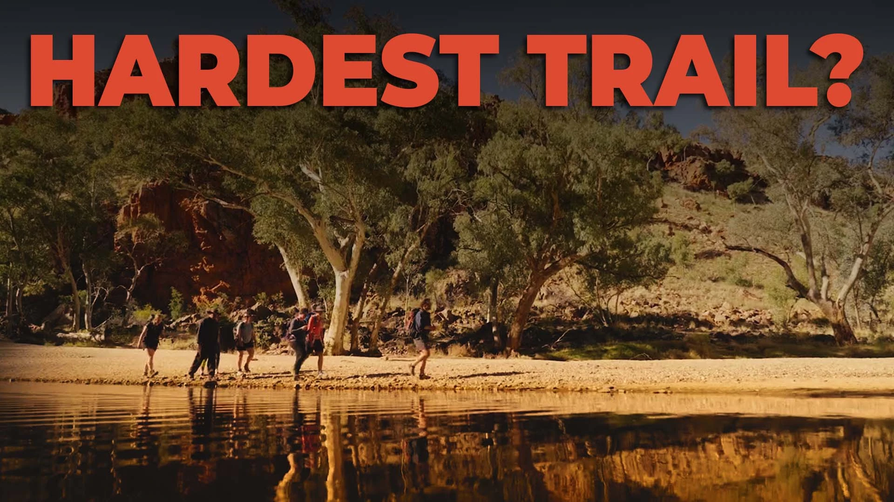
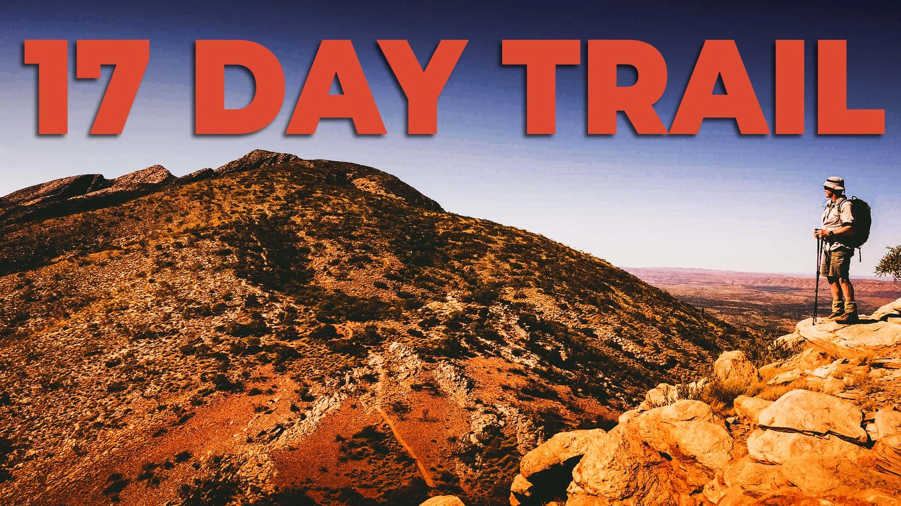

1: QUICK LOOK AT THE VIDEO
Niche:
Video blog
Description:
This video is a full vlog documenting the journey of hiking the hardest trail in Australia.
Aim of Video:
The goal here is to attract a new audience. Since the creator already gets consistent views from regular subscribers, the focus is on expanding reach and finding new viewers.
2: The Goal
Objective:
The thumbnail needs to match the creator's usual style so older subscribers can easily spot his videos, while remaining clear enough to instantly grab attention when suggested to a newer audience.
3: Let's see what's working in this niche
Looking at similar adventure and hiking vlogs, successful thumbnails usually feature cinematic landscapes with simple text. This style is the best to visually give a sense of isolation, scale, or a challenge before the viewer even reads the title.
4: Variation


5: Let's Build the Thumbnail
The Text Choice:
The final thumbnail uses the simple text "Larapinta," which is the cleanest option. When combined with the background image and the video's title, it instantly gives the viewer clear context. Other tested text options (like "Hardest Trail?" and "17 Day Trail") basically just repeat information that is already in the title. While that logic works, using "Larapinta" pairs much better with the title without being repetitive.
The Background & Subject:
The chosen background image is the best fit because it visually highlights the massive scale of the trail while keeping the hiker locked clearly in focus. It creates a strong sense of place and adventure right away.
6: Final Pick